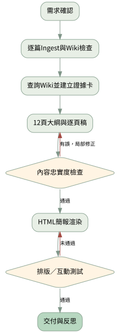

Graph規格與執行紀錄｜旅日手帖
Graph先決定「誰在控制」，Loop只修出錯的節點。所有狀態應由檔案及實測報告決定，不能由生成模型自行宣告。
flowchart TD
A[需求確認] --> B[逐篇來源提案]
B --> C[Wiki寫入]
C --> D{Wiki Lint + Query}
D -->|失敗| C
D -->|通過| E[檢索已寫入Wiki]
E --> F{至少3份相關知識?}
F -->|不足| STOP[停止補來源]
F -->|足夠| G[證據卡]
G --> H{卡片連結 / 來源正確?}
H -->|否| G
H -->|是| I[12頁大綱]
I --> J[逐頁稿]
J --> K{忠實度 / 覆蓋率檢查}
K -->|失敗| J
K -->|通過| L[HTML渲染]
L --> M{瀏覽器互動 / 排版檢查}
M -->|失敗| L
M -->|通過| N[成果與反思]
| 節點 | 輸入 | 產出 | 可執行檢查 | 失敗回退 | 本次實際執行 |
|---|---|---|---|---|---|
| G0 需求確認 | 10題訪談 | requirements.md、AGENTS.md |
人工確認 | 停止 | 10項已確認 |
| G1 個別Ingest提案 | JNTO官方主題頁 | proposals/S00*.md |
來源/檔案異動審閱 | G1 | 6份提案；S001單獨批准，S002–S006一次性整體授權 |
| G2 Wiki寫入 | 提案及官方來源 | 6份來源摘要、6份指南、6份概念 | tests/lint_wiki.py、tests/query_wiki.py |
G2、G1 | 已執行；55/55及12/12 |
| G3 Wiki檢索 | 6份既有Wiki指南 | slides/sources.md |
來源數量至少3 | G2或停止 | 6份已整理來源 |
| G4 證據卡 | Wiki指南 | slides/cards/card-*.md |
本地連結與來源ID | G3 | 12份，首次路徑錯誤已局部修正 |
| G5 大綱 | 證據卡 | slides/outline.md |
頁數、主題涵蓋 | G4 | 12頁；未取得獨立逐頁人工批准 |
| G6 逐頁稿 | 大綱與證據卡 | slides/drafts/slide-*.md |
來源ID、段落一致性 | G4或G6 | 12份；未做獨立新對話AI忠實度審查 |
| G7 HTML渲染 | 逐頁稿 | slides/deck.html |
Playwright/Chromium互動測試 | G7；內容問題回G6 | 19/19瀏覽器測試通過 |
| G8 成果 | 所有檔案/測試 | index.html、evidence/、slides/report.md |
資料夾完整、git狀態 | 回到失敗關卡 | 已產生紀錄 |
可執行的Graph原型
執行 python workflow/run_workflow.py，以G0–G8分關依序檢查；失敗時立即停止並回報最近節點。已執行的紀錄在 evidence/workflow_run.json。此腳本不會呼叫外部LLM，也不會自行改寫來源或把未批准資料冒充人工核准。
重要說明
- 大圈盡量少轉：如果證據卡連結出錯，不重新Ingest全部文章。
- 小圈就地處理：若預算試算有錯，先修HTML的計算邏輯與測試。
- 每個Loop最多3輪；來源不足或有重大衝突即停下並標記。
- S002–S006的授權是整體完成指示，不等同逐篇人工核准。